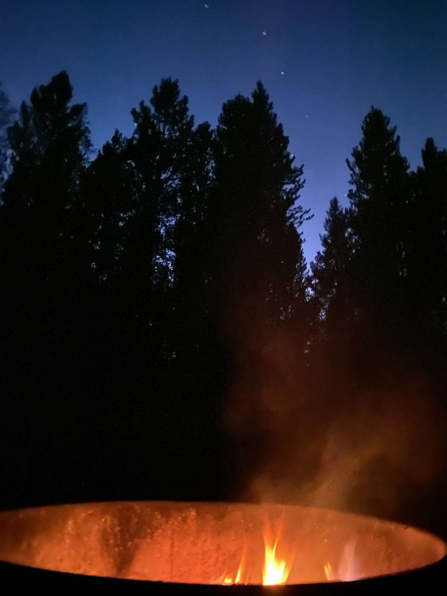
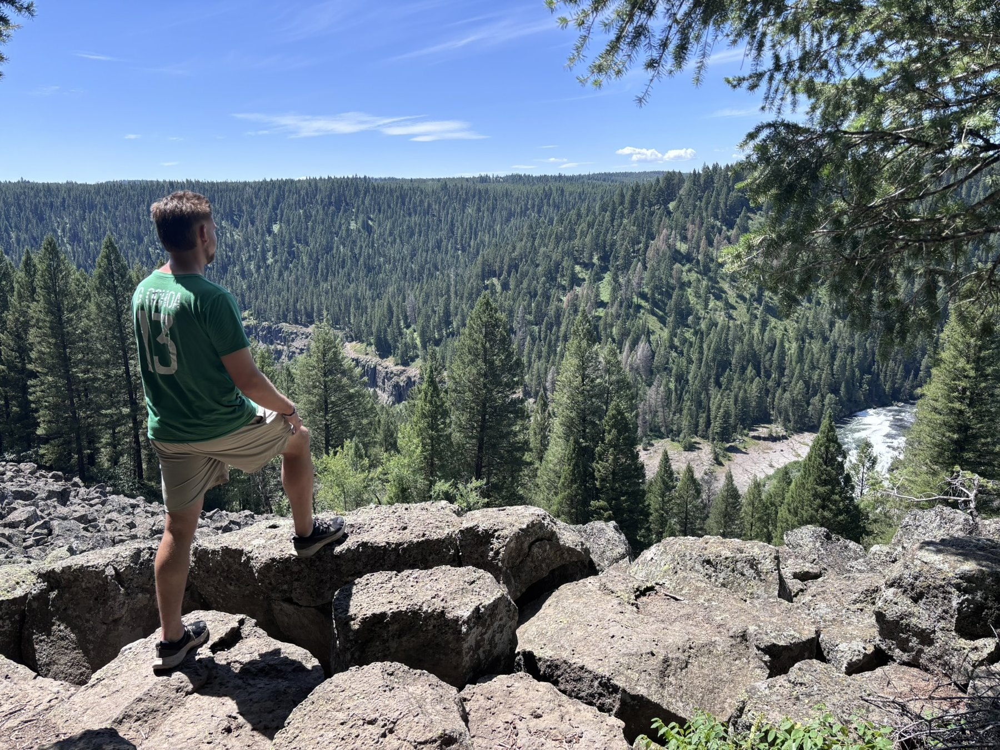
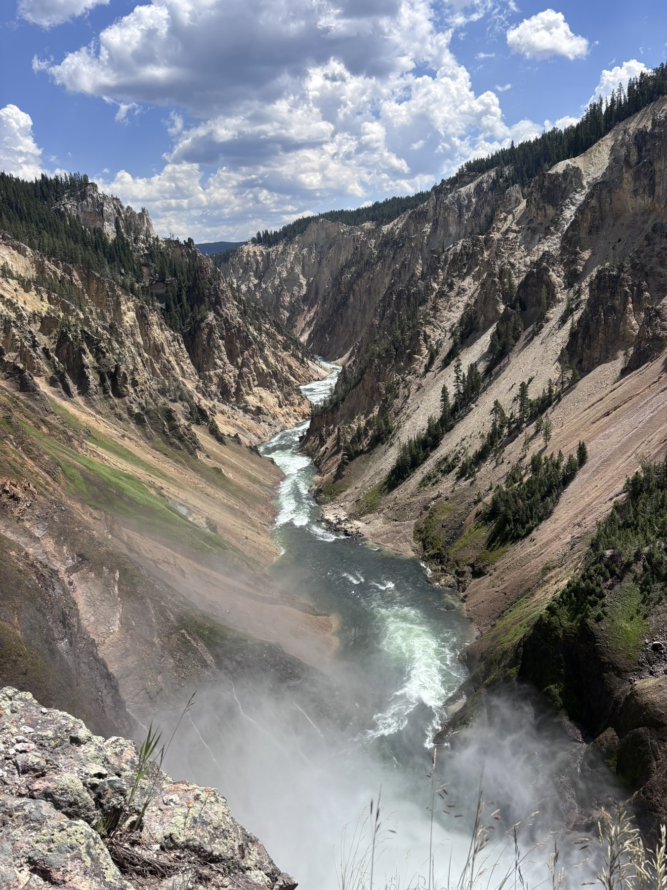
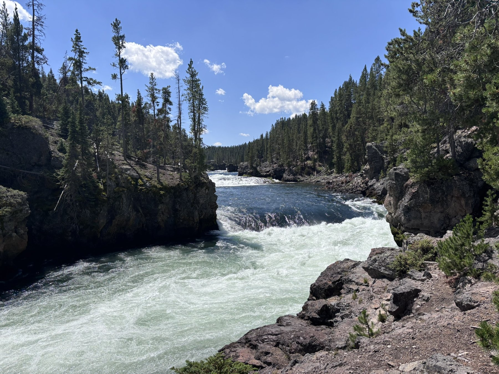
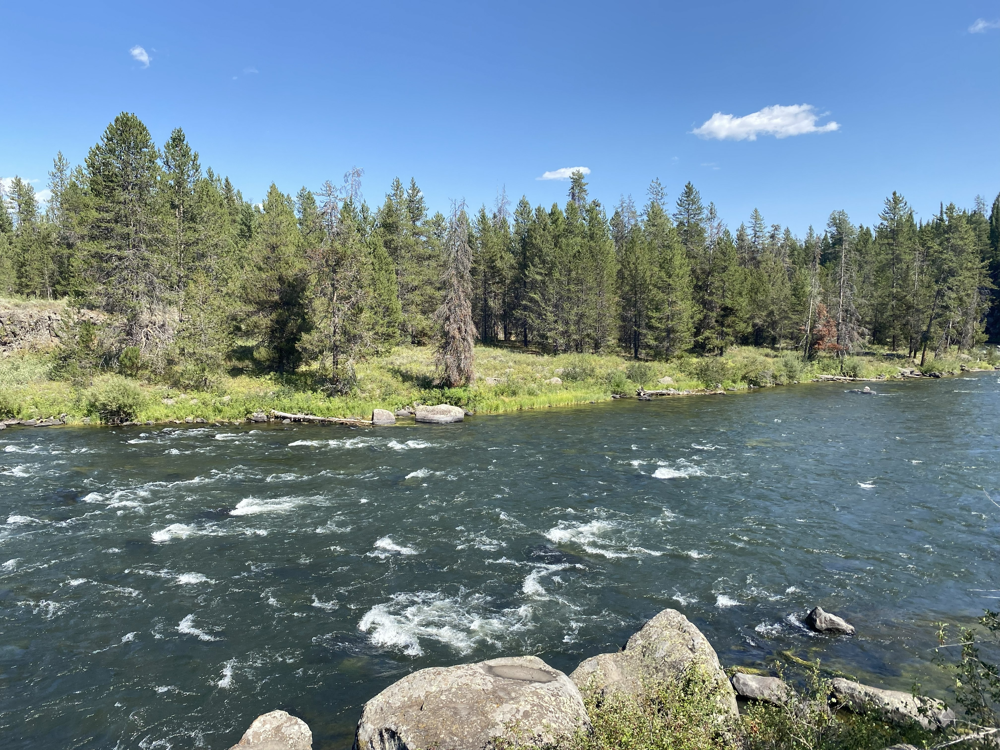
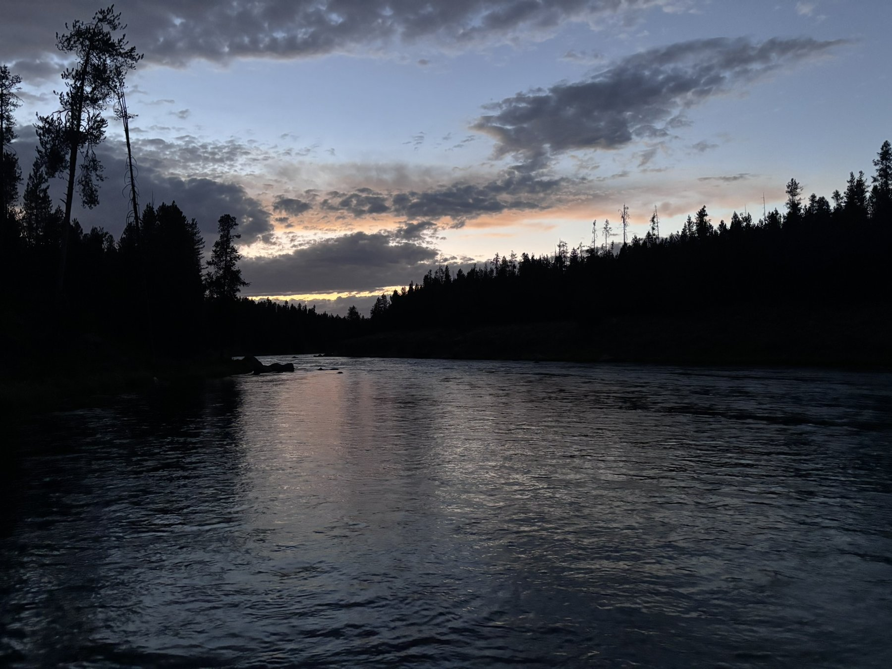
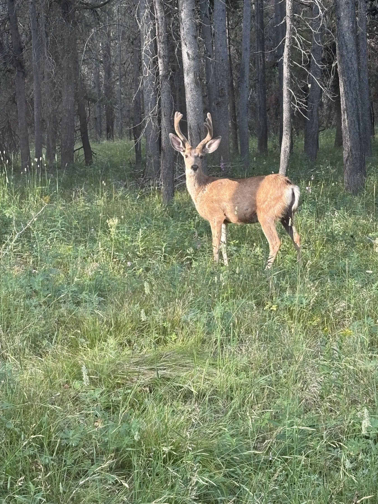

Island Park is one of our favorite summer destinations. With beautiful mountain scenery, rivers, lakes, and Yellowstone nearby, there are plenty of places to explore.
This visit was our third time camping at Riverside Campground, but it was the first time all of our adult children were able to join us, along with our oldest son’s girlfriend. Over four days, we spent time in the river, visited Yellowstone, and gathered around the fire in the evenings.
Our Home Base: Riverside Campground
Riverside Campground sits in the Caribou–Targhee National Forest, about 15 miles north of Ashton, along the Henry’s Fork of the Snake River.
We stayed at Site A002, directly beside the river. Having the water right there shaped our days – we skipped rocks, cooled off in the current, and relaxed under the trees without needing to pack up and drive anywhere.
The campground has picnic tables, fire rings, drinking water, and vault toilets. There are no electrical hookups, so plan accordingly if you’re bringing an RV.

What Worked for Us
Having river access right from camp made it easy to enjoy the time between outings. Riverside also gave us a convenient base for exploring the area, with Big Springs, Mesa Falls, and Yellowstone all within reach for day trips.
But the best part was having a place everyone could come back to – somewhere to settle in, sit around the fire, read a book, or cool off in the river.

A Day in Yellowstone
Island Park makes a great base for visiting Yellowstone through the West Entrance. It’s a full day of exploring, especially when you account for the drive into the park and the distances between sights.
We spent most of our time around the Upper and Lower Falls of the Yellowstone River. The canyon views were incredible.

What We’d Keep in Mind Next Time
- Getting an early start helps with entrance lines and parking at popular overlooks.
- If the falls are a priority, head toward the canyon before the day gets too busy.
- Bring a layer — conditions can be cooler and windier than at camp.
- Check Yellowstone’s current entrance fees and road conditions before heading out.
- Many visitors get stuck at the big-name attractions like Old Faithful and miss lesser-known areas. If you haven’t seen Old Faithful, it’s worth the stop – but there’s so much more to explore throughout the park.

Big Springs and the Henry’s Fork Float
Big Springs is one of the headwaters of the Henry’s Fork, known for its clear, cold water. A float toward Mack’s Inn is a great way to spend a summer day at a slower pace.
The route begins at the designated Big Springs boat launch downstream from the springs. Plan for roughly three hours, depending on water conditions, your craft, and how often you stop.
Local outfitters offer rentals, so you can enjoy the float even if you haven’t brought your own equipment. When booking, confirm the launch point, take-out location, and transportation arrangements.

Why We Keep Coming Back
Island Park is beautiful, and there’s plenty to do – but the real draw for us is the combination of the river, easy day trips, and evenings around the fire. After three stays at Riverside, we already knew we liked the place. Sharing it with all our adult kids made this visit stand out.
We’re all committed to coming back next summer.

One more moment from the trip
